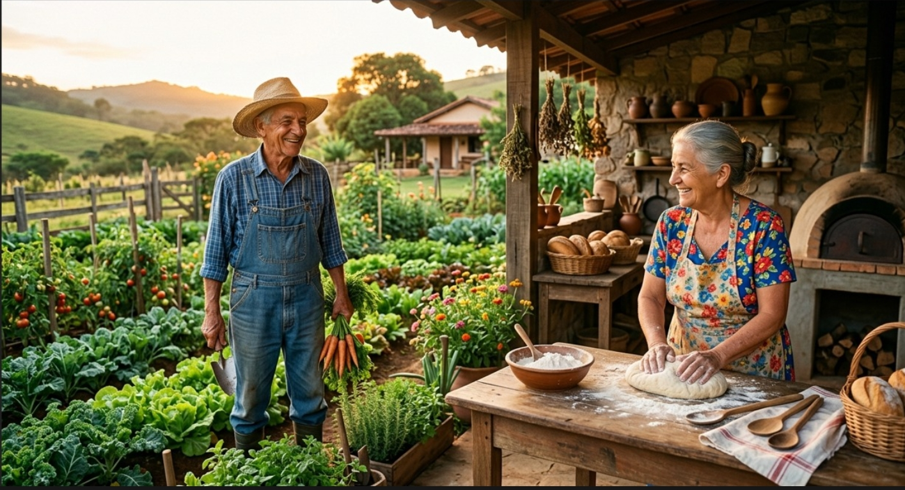
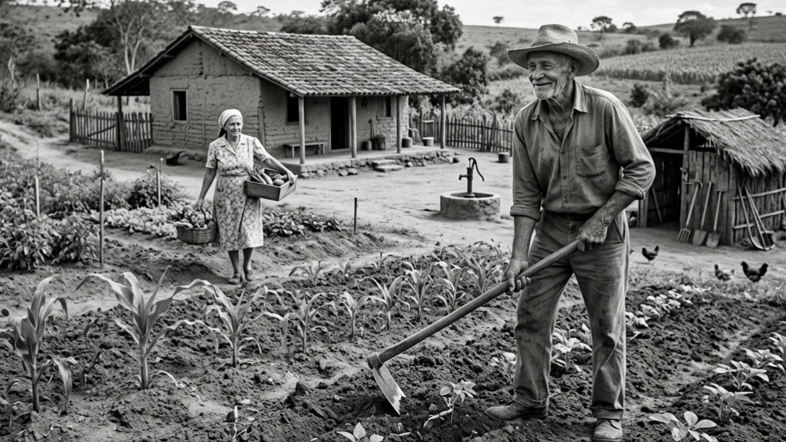
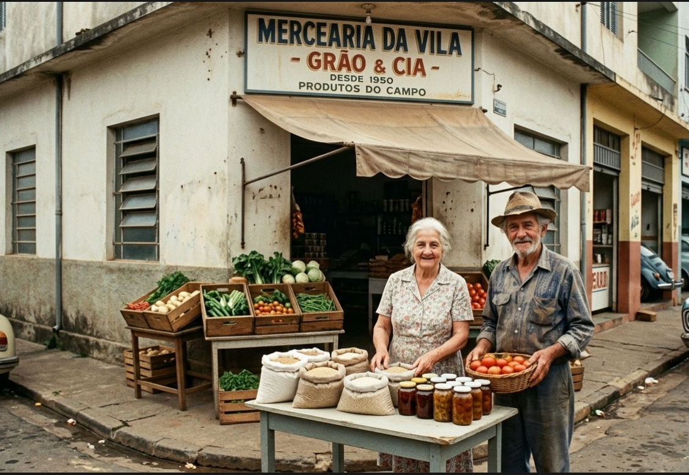
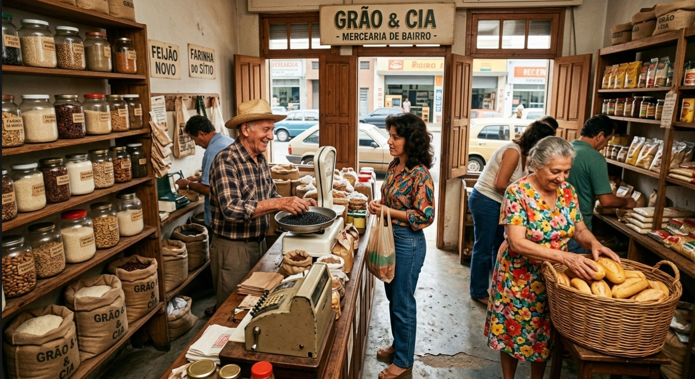
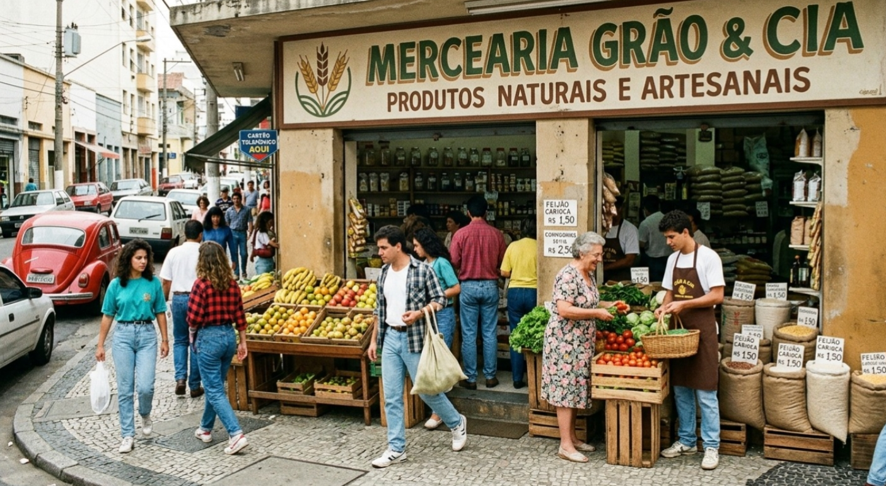
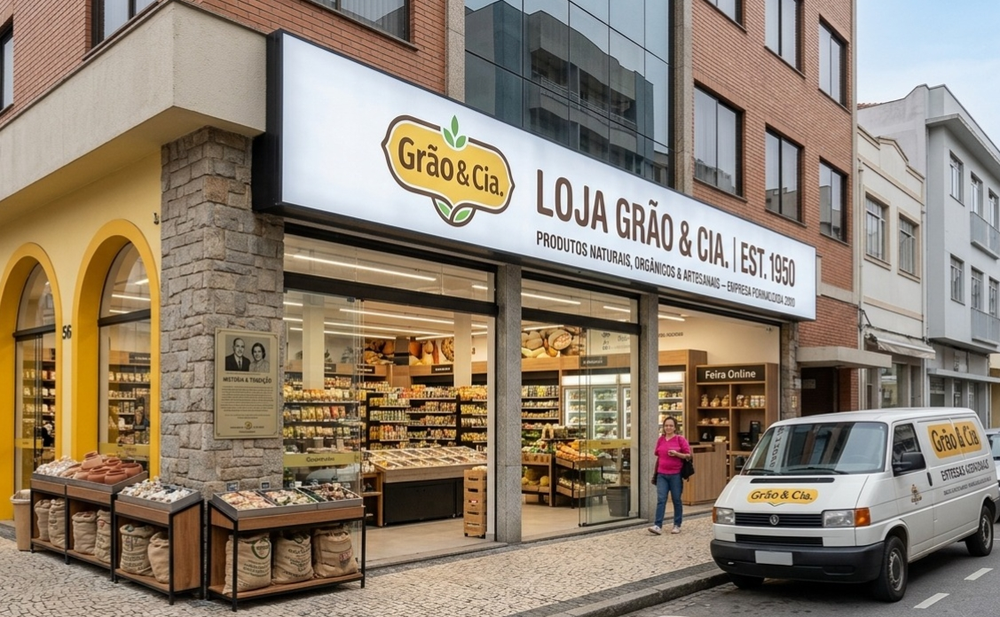
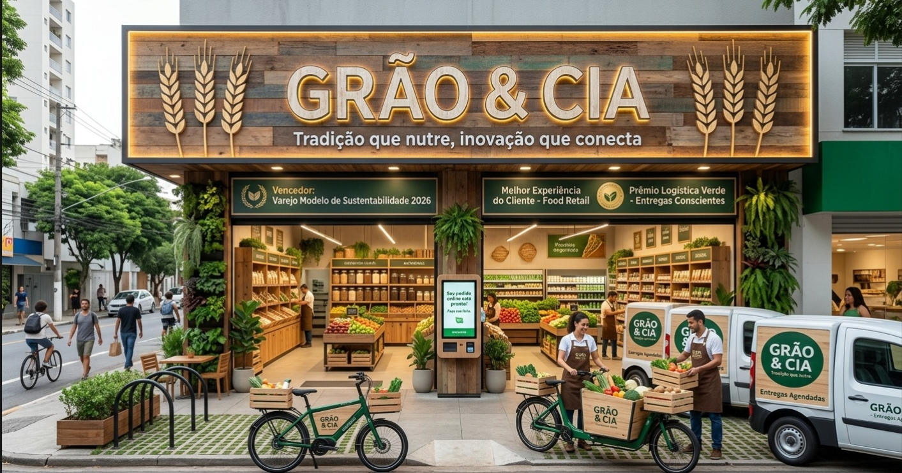

Grãos
Seleção especial de cafés, cereais integrais e leguminosas nobres.
Desde 1950 · quatro gerações
Seu Bento e Dona Maria plantavam milho, feijão e hortaliças com o tempo que a terra pedia — sem pressa, sem atalho. O pão caseiro da Dona Maria virou motivo pra vizinhos atravessarem o bairro.
Setenta anos, seis gerações de mudança e uma promessa que nunca saiu do lugar: comida de verdade, do campo para a sua mesa.

Seis décadas de história contadas por diferentes gerações.
1950
As Raízes na Roça: Seu Bento e Dona Maria iniciam o cultivo no sítio. Com trabalho artesanal, amor à terra e sementes selecionadas, a família produz milho, feijão, hortaliças e o tradicional pão caseiro.
Essência: Alimentação pura, respeito ao tempo da natureza e sustento da família com o que a terra dá de melhor.

1970
Da Feira ao Bairro: Com a fartura das colheitas, a família passa a levar seus produtos para as feiras de rua. O carinho no atendimento e a qualidade dos grãos conquistam a vizinhança.
A Primeira Porta: Nasce a primeira modesta mercearia de bairro, com sacos de juta, potes a granel e o cheiro inconfundível de especiarias e café moído na hora.

1980
Novo Espaço: A mercearia muda para um imóvel maior para comportar a crescente demanda, ampliando a variedade de farinhas, temperos e grãos a granel.
Referência Local: O ponto se consolida como o local preferido da comunidade para quem busca ingredientes frescos e atendimento familiar.

1990
Recordes e Popularidade: A marca atinge o topo de vendas na região, tornando-se parada obrigatória para a compra de produtos naturais e artesanais.
Visão de Futuro: Antecipa a busca por uma vida mais saudável, trazendo novos itens orgânicos e funcionais para as prateleiras.

2000
Nasce a Grão & Cia: A nova geração da família assume a gestão, estrutura os processos e oficializa a marca Grão & Cia.
Modernização Com Propósito: A loja amplia seu espaço, diversifica o catálogo de produtos e fortalece parcerias com pequenos produtores rurais da região.

Inovação e Tecnologia: A Grão & Cia se consolida como empresa modelo no setor, unindo a tradição do atendimento humano a um moderno sistema de feira online e entregas agendadas.
Reconhecimento e Prêmios: Vencedora de prêmios de excelência em sustentabilidade, logística verde e satisfação do cliente.
O Legado Permanece: Cada entrega carrega a mesma promessa feita em 1950: comida de verdade, do campo para a sua mesa.

Produtos
Seleção especial de cafés, cereais integrais e leguminosas nobres.

Folhas e verduras frescas de cultivo orgânico e local.

Frutas orgânicas da estação, colhidas no ponto ideal.

Raízes, tubérculos e legumes frescos sem agrotóxicos.

Ervas, especiarias puras e blends artesanais.
Sem spam — só avisos de colheita nova e as ofertas da semana, direto do campo pra sua caixa de entrada.